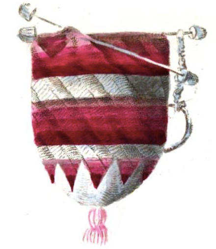
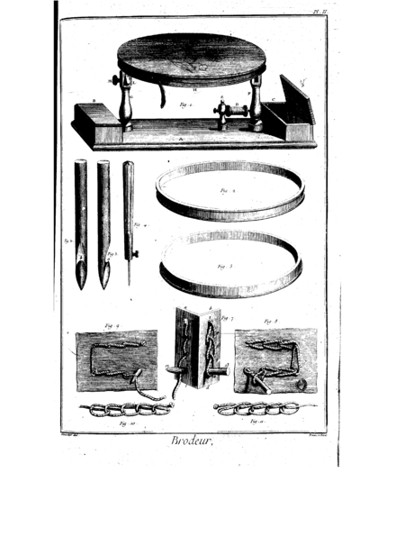
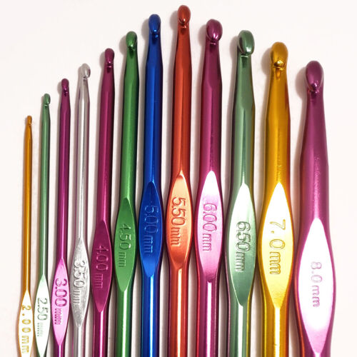
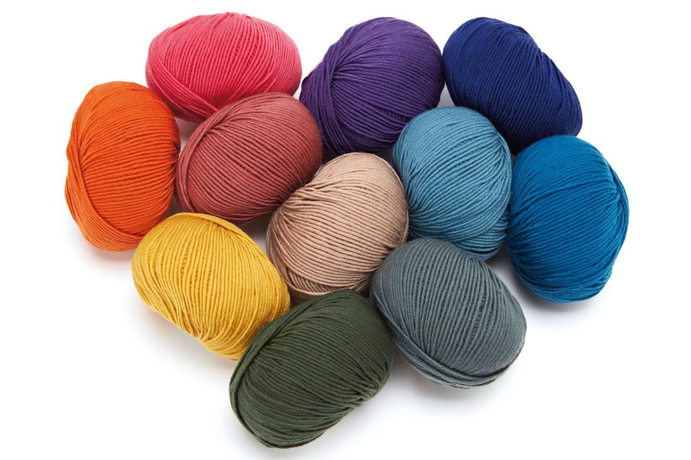

Crochet is a process of creating textiles by using a crochet hook to interlock loops of yarn, thread, or strands of other materials. The name is derived from the French term crochet, meaning 'hook'. Hooks can be made from a variety of materials, such as metal, wood, bamboo, or plastic. The key difference between crochet and knitting, beyond the implements used for their production, is that each stitch in crochet is completed before the next one is begun, while knitting keeps many stitches open at a time. Some variant forms of crochet, such as Tunisian crochet and broomstick lace, do keep multiple crochet stitches open at a time.
The word crochet is derived from the Old French crochet, a diminutive of croche, in turn from the Germanic croc, both meaning "hook".It was used in 17th-century French lace-making, where the term crochetage designated a stitch used to join separate pieces of lace. The word crochet subsequently came to describe both the specific type of textile, and the hooked needle used to produce it.
Knitted textiles survive from as early as the 11th century CE, but the first substantive evidence of crocheted fabric emerges in Europe during the 19th century. Earlier work identified as crochet was commonly made by nålebinding, a different looped yarn technique.
The first known published instructions for crochet explicitly using that term to describe the craft in its present sense appeared in the Dutch magazine Penélopé in 1823. This includes a colour plate showing five styles of purse, of which three were intended to be crocheted with silk thread. The first is "simple open crochet" (crochet simple ajour), a mesh of chain-stitch arches. The second (illustrated here) starts in a semi-open form (demi jour), where chain-stitch arches alternate with equally long segments of slip-stitch crochet, and closes with a star made with "double-crochet stitches" (dubbelde hekelsteek: double-crochet in British terminology; single-crochet in US).The third purse is made entirely in double-crochet. The instructions prescribe the use of a tambour needle (as illustrated below) and introduce a number of decorative techniques.
The earliest dated reference in English to garments made of cloth produced by looping yarn with a hook—shepherd's knitting—is in The Memoirs of a Highland Lady by Elizabeth Grant (1797–1830). The journal entry, itself, is dated 1812 but was not recorded in its subsequently published form until some time between 1845 and 1867, and the actual date of publication was first in 1898.Nonetheless, the 1833 volume of Penélopé describes and illustrates a shepherd's hook, and recommends its use for crochet with coarser yarn. In 1844, one of the numerous books discussing crochet that began to appear in the 1840s states:
Crochet needles, sometimes called Shepherds' hooks, are made of steel, ivory, or box-wood. They have a hook at one end similar in shape to a fish-hook, by which the wool or silk is caught and drawn through the work. These instruments are to be procured of various sizes...
Two years later, the same author writes:
Crochet, — a species of knitting originally practised by the peasants in Scotland, with a small hooked needle called a shepherd's hook, — has, within the last seven years, aided by taste and fashion, obtained the preference over all other ornamental works of a similar nature. It derives its present name from the French; the instrument with which it is worked being by them, from its crooked shape, termed 'crochet.' This art has attained its highest degree of perfection in England, whence it has been transplanted to France and Germany, and both countries, although unjustifiably, have claimed the invention.
An instruction book from 1846 describes Shepherd or single crochet as what in current British usage is either called single crochet or slip-stitch crochet, with U.S. American terminology always using the latter (reserving single crochet for use as noted above). It similarly equates "Double" and "French crochet".
Notwithstanding the categorical assertion of a purely British origin, there is solid evidence of a connection between French tambour embroidery and crochet. French tambour embroidery was illustrated in detail in 1763 in Diderot's Encyclopedia. The tip of the needle shown there is indistinguishable from that of a present-day inline crochet hook and the chain stitch separated from a cloth support is a fundamental element of the latter technique. The 1823 Penélopé instructions unequivocally state that the tambour tool was used for crochet and the first of the 1840s instruction books uses the terms tambour and crochet as synonyms.This equivalence is retained in the 4th edition of that work, 1847.
The strong taper of the shepherd's hook eases the production of slip-stitch crochet but is less amenable to stitches that require multiple loops on the hook at the same time. Early yarn hooks were also continuously tapered but gradually enough to accommodate multiple loops. The design with a cylindrical shaft that is commonplace today was largely reserved for tambour-style steel needles. Both types gradually merged into the modern form that appeared toward the end of the 19th century, including both tapered and cylindrical segments, and the continuously tapered bone hook remained in industrial production until World War II.
The early instruction books make frequent reference to the alternative use of 'ivory, bone, or wooden hooks' and 'steel needles in a handle', as appropriate to the stitch being made. Taken with the synonymous labeling of shepherd's- and single crochet, and the similar equivalence of French- and double crochet, there is a strong suggestion that crochet is rooted both in tambour embroidery and shepherd's knitting, leading to thread and yarn crochet respectively; a distinction that is still made. The locus of the fusion of all these elements—the "invention" noted above—has yet to be determined, as does the origin of shepherd's knitting. Shepherd's hooks are still being made for local slip-stitch crochet traditions.The form in the accompanying photograph is typical for contemporary production. A longer continuously tapering design intermediate between it and the 19th-century tapered hook was also in earlier production, commonly being made from the handles of forks and spoons.
 Basic materials required for crochet are a hook and some type of material that will be crocheted, most commonly yarn or thread. Yarn, one of the most commonly used materials for crocheting, has varying weights which need to be taken into consideration when following patterns. Acrylic can also be used when crocheting, as it is synthetic and an alternative for wool. Additional tools are convenient for making related accessories. Examples of such tools include cardboard cutouts, which can be used to make tassels, fringe, and many other items; a pom-pom circle, used to make pom-poms; a tape measure and a gauge measure, both used for measuring crocheted work and counting stitches; a row counter; and occasionally plastic rings, which are used for special projects. In recent years, yarn selections have moved beyond synthetic and plant and animal-based fibers to include bamboo, qiviut, hemp, and banana stalks, to name a few. Many advanced crocheters have also incorporated recycled materials into their work in an effort to "go green" and experiment with new textures by using items such as plastic bags, old t-shirts or sheets, VCR or Cassette tape, and ribbon.
The crochet hook comes in many sizes and materials, such as bone, bamboo, aluminium, plastic, and steel.Because sizing is categorized by the diameter of the hook's shaft, a crafter aims to create stitches of a certain size in order to reach a particular gauge specified in a given pattern. If gauge is not reached with one hook, another is used until the stitches made are the needed size. Crafters may have a preference for one type of hook material over another due to aesthetic appeal, yarn glide, or hand disorders such as arthritis, where bamboo or wood hooks are favored over metal for the perceived warmth and flexibility during use. Hook grips and ergonomic hook handles are also available to assist crafters. Steel crochet hooks range in size from 0.4 to 3.5 millimeters, or from 00 to 16 in American sizing. These hooks are used for fine crochet work such as doilies and lace.Aluminium, bamboo, and plastic crochet hooks are available from 2.5 to 19 millimeters in size, or from B to S in American sizing.Artisan-made hooks are often made of hand-turned woods, sometimes decorated with semi-precious stones or beads.Crochet hooks used for Tunisian crochet are elongated and have a stopper at the end of the handle, while double-ended crochet hooks have a hook on both ends of the handle. There is also a double hooked apparatus called a Cro-hook that has become popular. A hairpin loom is often used to create lacy and long stitches, known as hairpin lace. While this is not in itself a hook, it is a device used in conjunction with a crochet hook to produce stitches.
Yarn for crochet is usually sold as balls, or skeins (hanks), although it may also be wound on spools or cones. Skeins and balls are generally sold with a yarn band, a label that describes the yarn's weight, length, dye lot, fiber content, washing instructions, suggested needle size, likely gauge, etc. It is a common practice to save the yarn band for future reference, especially if additional skeins must be purchased. Crocheters generally ensure that the yarn for a project comes from a single dye lot. The dye lot specifies a group of skeins that were dyed together and thus have precisely the same color; skeins from different dye lots, even if very similar in color, are usually slightly different and may produce a visible stripe when added onto existing work. If insufficient yarn of a single dye lot is bought to complete a project, additional skeins of the same dye lot can sometimes be obtained from other yarn stores or online.
Fashions in crochet changed with the end of the Victorian era in the 1890s. Crocheted laces in the new Edwardian era, peaking between 1910 and 1920, became even more elaborate in texture and complicated stitching.
The strong Victorian colours disappeared, though, and new publications called for white or pale threads, except for fancy purses, which were often crocheted of brightly colored silk and elaborately beaded. After World War I, far fewer crochet patterns were published, and most of them were simplified versions of the early 20th-century patterns.After World War II, from the late 1940s until the early 1960s, there was a resurgence in interest in home crafts, particularly in the United States, with many new and imaginative crochet designs published for colorful doilies, potholders, and other home items, along with updates of earlier publications. These patterns called for thicker threads and yarns than in earlier patterns and included variegated colors. The craft remained primarily a homemaker's art until the late 1960s and early 1970s, when the new generation picked up on crochet and popularized granny squares, a motif worked in the round and incorporating bright colors.
Although crochet underwent a subsequent decline in popularity, the early 21st century has seen a revival of interest in handcrafts and DIY, as well as improvement of the quality and varieties of yarn. As well as books and classes, there are YouTube tutorials and tiktok videos to help people who may need a clearer explanation to learn how to crochet. Filet crochet, Tunisian crochet, tapestry crochet, broomstick lace, hairpin lace, cro-hooking, and Irish crochet are all variants of the basic crochet method.
Crochet has experienced a revival on the catwalk as well. Christopher Kane's Fall 2011 Ready-to-Wear collection makes intensive use of the granny square, one of the most basic of crochet motifs. In addition, crochet has been utilized many times by designers on the reality show Project Runway.Websites such as Etsy and Ravelry have made it easier for individual hobbyists to sell and distribute their patterns or projects across the internet.